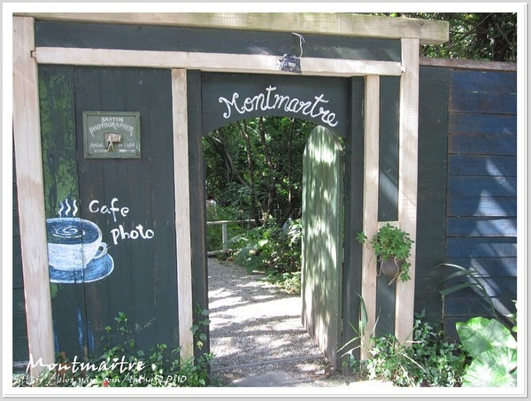

中国咖啡文化及其发展

台北 蒙马特影像咖啡馆
台北咖啡馆，或者是台湾人对饮食的文化，未曾体验过，也一定听闻过。基本上，台湾人习惯城市咖啡文化，几乎可以说生活在咖啡世界。台北最火的咖啡热话已转到一系列的山区咖啡馆。蒙马特影像咖啡馆，馆主赖岳忠本是一位台北著名的人像摄影师。因他喜爱巴黎，很想在台北寻回巴黎的气味，所以在阳明山一角辟出属于自己的咖啡新天地，尽情释放巴黎的咖啡香气。
有识之士在台北开设咖啡馆值得庆幸，因不乏捧场客趁夜幕低垂之际从老远城中前来落脚，咖啡馆最繁忙之时正是由晚饭后开始。馆子分三个区域，分别是馆前的露天茶座、主馆和后馆。炎夏的台北，户外茶座也大有人坐，可见台湾年轻一辈对咖啡文化钟爱有加。主馆及后馆内布局有如美术馆，馆内也腾出偌大的空间来放置一张床，俨然一副下午茶的格局。
中国人喝茶已经有几千年的历史了，作为世界上茶的原产地，人们在消费习惯和观念上对咖啡这种外来的饮料或多或少地存在着一种忽视或者轻视。中国大陆的咖啡文化应该起始于旧上海的英法日租界，而当时的咖啡馆是洋人和上等华人出没的场合，并没有进入寻常百姓家的生活。直到近年来，随着外来文化的冲击和生活方式的转变，咖啡更多地进入了寻常中国百姓家，中国的咖啡文化才逐渐兴盛起来。
对于我国大地上的咖啡市场，很多分析师认为市场庞大，发展潜力巨大。根据伦敦的国际咖啡组织的统计，与全球平均2%的增长率相比，中国的咖啡消费正在以每年15%的惊人速度增长。中国人每年平均只喝3杯咖啡，但是和其相对来比较的话，北美人是大约在五百到七百杯。
在上一世纪八十年代末，随着中国咖啡文化的兴起，人们开始慢慢对非洲咖啡有了越来越深入的了解，甚至有很多咖啡爱好者在品尝非洲咖啡之后，转而开始在中国进行推广和销售。但是，非洲咖啡在中国市场的销量仍然非常微小，大多数人提起非洲咖啡仍是一片迷茫。